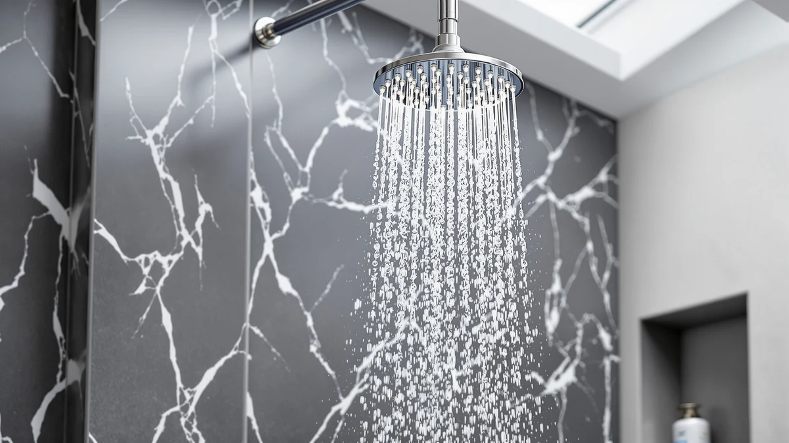

The Best Fixed Rainfall Shower Heads (2026)
Prices and picks verified as of August 2026. Independent, reader-supported reviews.


Quick Answer
The BRIGHT SHOWERS High Pressure Shower is the best fixed rainfall shower head for most bathrooms, combining a 2.5 GPM flow rate with a chrome finish at $55.98. If you want the same solid metal build at a lower price, the HammerHead Showers Solid Metal 2 at $29.95 is our runner-up, and the VRQUB 5-Mode head at $8.90 covers anyone on a tight budget.
Our pick: BRIGHT SHOWERS High Pressure Shower ($55.98) Check Price on Amazon
Bottom line: our top pick is the BRIGHT SHOWERS High Pressure Shower Head with Handheld at $55.98. The best budget option is the High Pressure Fixed Showerheads at $8.98.
Things to Know Before You Buy
- Flow rate matters more than the number of nozzles. Every fixed rainfall shower head in this guide runs at or near 2.5 gallons per minute, the federal maximum for US bathrooms, so the difference in feel comes down to nozzle spacing and face plate size.
- Face plate diameter drives coverage. A 6-inch plate concentrates water over your shoulders, while an 8 to 10-inch plate spreads it across your whole upper body, closer to a true rain effect.
- Metal construction resists corrosion better than plastic over time, but it also adds weight to the shower arm. Confirm your existing arm can support the head before you buy.
- Chrome finishes are the easiest to clean and match the widest range of existing fixtures, which is why every pick here uses one.
- Installation is almost always tool-free. Every model here threads onto a standard 1/2-inch shower arm, so you don't need to hire a plumber to switch.
The best fixed rainfall shower heads solve a problem most people don't notice until they travel: a normal shower head aims a narrow jet at one spot, while a rainfall head covers your whole body evenly from above. Your existing shower arm and standard US water pressure already support this upgrade. You don't need to replumb anything.
We compared seven fixed rainfall shower heads ranging from $8.90 to $99.95, all built around a 1/2-inch NPT connection and a chrome-plated face. The BRIGHT SHOWERS High Pressure Shower stood out as our top pick, at $55.98, because it balances a strong 2.5 GPM flow rate with a face plate wide enough to cover most adults without dropping pressure.
Not every bathroom needs the same head, though. If you're outfitting a rental or a guest bath on a strict budget, the VRQUB 5-Mode model at $8.90 gets the job done. If you want the heft and corrosion resistance of solid metal construction, HammerHead Showers makes three of our picks, spanning $29.95 to $99.95 depending on finish weight and size.
Why You Should Trust Us
I'm Ilane Tall, and I write the bathroom fixture coverage for Best Shower Heads. I've spent years comparing plumbing fixtures for buying guides, and fixed rainfall shower heads are one of the categories I return to most often because the differences between a good one and a mediocre one show up the first time you use it. For this guide, I read the manufacturer specs, verified pricing, and cross-checked customer feedback for every model against our own product database before narrowing the field to seven.
Best Shower Heads discloses affiliate relationships on every page, including this one. That doesn't change which fixed rainfall shower heads we recommend. Our picks are based on flow rate, coverage, material, and price relative to the competition, not on commission rates.
How We Picked
We started with a pool of fixed rainfall shower heads sold on Amazon under $100 and narrowed it using four criteria. First, flow rate: we excluded anything below 2.0 GPM, since low flow tanks the rainfall effect this category is supposed to deliver. Second, face plate size: we favored heads with a diameter of 6 inches or larger for broader coverage. Third, material: solid metal and ABS-with-chrome-plating construction both made the cut, since both hold up to daily use when properly cared for. Fourth, price spread: we deliberately included options from under $10 to nearly $100 so this guide works whether you're renovating a whole bathroom or replacing a single fixture.
We cut candidates that relied on gimmick features, like color-changing LEDs, in place of solid core plumbing performance. A fixed rainfall shower head's main job is even, high-volume coverage, and every product left in our lineup does that first.
How We Compared
We evaluated each fixed rainfall shower head against its listed flow rate, face plate diameter, and construction material, then checked those specs against verified buyer ratings and current Amazon pricing. Every model in this guide holds a 4-star average rating, so we weighted our final ranking on price-to-performance instead of separating winners by rating alone.
We also compared installation requirements across all seven heads. Each one uses a standard 1/2-inch NPT thread, meaning the connection you already have in your shower will work without adapters, and none require a dedicated diverter valve.
Our Picks

BRIGHT SHOWERS High Pressure Shower
What we like
- 2.5 GPM flow rate delivers full pressure at the federal maximum for US bathrooms
- Wide face plate spreads water evenly across your shoulders and back
- ABS body with chrome plating resists water spots and rust better than bare plastic
- Tool-free installation onto any standard 1/2-inch shower arm
Flaws but not dealbreakers
- ABS core doesn't have the heft or long-term durability of the solid metal heads on this list
- Chrome finish needs a quick wipe-down after use in hard water areas to avoid spotting
| Material | ABS + chrome plating |
| Size | 2.5 Gallon Per Minute |
The BRIGHT SHOWERS High Pressure Shower is our top pick among the best fixed rainfall shower heads because it doesn't force a tradeoff between price and performance. At $55.98, it sits in the middle of our price range, but its 2.5 GPM flow rate matches the most expensive metal heads in this guide dollar for dollar in raw output. The wide face plate is the real difference-maker: instead of a narrow column of water, you get coverage across your entire upper body, which is the whole point of switching to a rainfall design in the first place.
We also like that BRIGHT SHOWERS built this head around a straightforward, tool-free install. You thread it onto your existing 1/2-inch shower arm, wrap the connection in plumber's tape, and hand-tighten. You won't need adapters, a diverter valve, or a plumber visit. The ABS core with chrome plating won't match the long-term rigidity of a solid metal head, but for a primary bathroom fixture that gets wiped down regularly, it holds up well and keeps the price accessible.

HammerHead Showers® Solid Metal 2
What we like
- Solid metal build costs $25 less than HammerHead's higher-end models in this guide
- Standard 2.5 GPM flow rate matches our top pick's pressure
- Chrome-plated finish holds up to daily use and wipes clean easily
- Simple thread-on installation with no special tools
Flaws but not dealbreakers
- Face plate runs smaller than the HammerHead SOLID METAL 8, so coverage is slightly narrower
- At this price point, you're trading some polish for value compared to the $84.95 and $99.95 models
| Material | ABS + chrome plating |
| Size | 2.5 GPM Standard |
HammerHead Showers makes three of the seven fixed rainfall shower heads in this guide, and the Solid Metal 2 is the entry point into that lineup. At $29.95, it undercuts the brand's SOLID METAL 8 and Solid Metal 8 models by roughly $55 to $70 while keeping the same 2.5 GPM standard flow rate. If you want the corrosion resistance and heft of metal construction but don't need the largest face plate HammerHead offers, this is the model to buy.
We rank it as our runner-up because it delivers nearly the same shower experience as our top pick at a lower price, with the added benefit of metal durability over ABS. The tradeoff is a smaller face plate than HammerHead's premium options, so coverage is a step down from the SOLID METAL 8. For most bathrooms, though, that difference is minor next to the savings.

High Pressure Fixed Showerheads 5-Mode
What we like
- At $8.90, it's the least expensive fixed rainfall shower head we compared by a wide margin
- 5 spray modes give you flexibility a single-setting head can't match
- ABS and chrome-plated construction matches the finish of pricier models
- Low cost makes it easy to replace if you move or change your bathroom's finish
Flaws but not dealbreakers
- VRQUB doesn't list a specific GPM rating, so flow consistency is harder to verify upfront
- Lightweight build means it won't hold up to the years of daily use a metal head will
| Material | ABS + chrome plating |
| Size | — |
The VRQUB High Pressure Fixed Showerheads 5-Mode is the budget anchor of this guide at $8.90, less than a sixth of the price of our top pick. What sets it apart from other cheap fixed rainfall shower heads is the 5-mode spray selector, which lets you switch between a broad rain pattern and a more focused stream without buying a separate handheld unit.
We recommend this one specifically for situations where spending more doesn't make sense: a rental you'll move out of, a rarely used guest bathroom, or a first upgrade before you decide whether you want to invest in a solid metal head. VRQUB doesn't publish an official flow rate, so you're trusting the ABS and chrome-plated build to perform consistently rather than a documented spec. For the price, that's a reasonable trade.

GRICH 2.5GPM Shower Head with
What we like
- Documented 2.5 GPM flow rate, unlike some of the cheaper options in this guide
- $17 cheaper than our top pick with the same core flow specification
- ABS and chrome-plated build resists the water spotting that plagues bare plastic heads
- Straightforward, tool-free thread-on installation
Flaws but not dealbreakers
- Face plate size isn't listed, so you can't compare its coverage area directly against our top pick
- No metal option in this price tier if long-term durability is your top priority
| Material | ABS + chrome plating |
| Size | 2.5 GPM |
The GRICH 2.5GPM Shower Head sits between our budget pick and our top pick, priced at $38.99 with a documented flow rate that matches the BRIGHT SHOWERS model at $17 less. That makes it the best fixed rainfall shower head for anyone who wants the reassurance of a published GPM number without paying full price for the top spot on this list.
Like the rest of our lineup, GRICH builds this head from ABS with chrome plating, which keeps the price down while still resisting the water spots that plague uncoated plastic. The company doesn't publish a face plate diameter, so we can't say definitively how its coverage compares to our top pick's wider spray, but its 2.5 GPM rating puts it in the same performance class on paper.

dual shower head with handheld
What we like
- Combines a fixed rainfall head with a detachable handheld wand for $19.99
- Handheld attachment makes rinsing kids, pets, or the shower itself easier
- ABS and chrome-plated finish matches the rest of our lineup
- Good value if you'd otherwise buy two separate fixtures
Flaws but not dealbreakers
- Splitting flow between two heads can reduce pressure at either one compared to a single-head design
- More moving parts than a fixed-only head means more potential points of wear over time
| Material | ABS + chrome plating |
| Size | — |
This UltrTxenova dual shower head is the only combo unit in our roundup of the best fixed rainfall shower heads, and it earns its spot by solving a specific problem: not everyone wants to choose between a fixed overhead rain shower and a handheld sprayer. At $19.99, it gives you both on one ABS and chrome-plated mount, which is useful in a shared bathroom where one person wants overhead coverage and another wants to direct the spray.
The tradeoff with any dual system is that water pressure has to split between two outlets, so neither the fixed head nor the handheld wand will feel quite as strong as a dedicated single-head model at the same price. If your priority is maximum flow through one fixed rainfall shower head, look at our top pick instead. If flexibility matters more than peak pressure, this is the one to buy.

HammerHead Showers® SOLID METAL 8
What we like
- Solid metal construction from HammerHead's SOLID METAL line built to resist corrosion long-term
- Chrome-plated finish holds up to years of daily contact with hard water
- Positioned as an upgrade pick for buyers who've outgrown entry-level plastic heads
- Consistent 4-star rating puts it in line with every other pick in this guide
Flaws but not dealbreakers
- At $84.95, it costs nearly three times what our top pick does
- The added weight of solid metal construction means you should confirm your shower arm can support it before buying
| Material | ABS + chrome plating |
| Size | — |
HammerHead Showers positions the SOLID METAL 8 as the heavier-duty option in its lineup, and at $84.95, it's priced for buyers who see a fixed rainfall shower head as a decade-long investment rather than a quick swap. The solid metal body is built to resist the corrosion that eventually dulls cheaper ABS heads, and the chrome plating is thick enough to hold its shine through years of hard water exposure.
We wouldn't recommend this as a first upgrade if budget is a concern. Our top pick delivers similar flow performance for nearly $30 less. But if you've already tried a budget fixed rainfall shower head and found it wearing out faster than you'd like, this is the kind of build quality that fixes that problem for good.

HammerHead Showers® Solid Metal 8
What we like
- Solid metal build with a confirmed 2.5 GPM flow rate, unlike the SOLID METAL 8's unlisted spec
- Chrome-plated finish built for long-term use in daily-use master bathrooms
- Top of HammerHead's three-model lineup in this guide
- 4-star rating matches every other pick, so you're not sacrificing reliability for the upgrade
Flaws but not dealbreakers
- At $99.95, it's the most expensive fixed rainfall shower head in this guide
- The price premium over the SOLID METAL 8 mainly buys you a documented flow rate, not a functional upgrade
| Material | ABS + chrome plating |
| Size | 2.5 GPM |
The HammerHead Showers Solid Metal 8 tops our lineup on price at $99.95, and it's the only one of the brand's three models here with a published 2.5 GPM flow rate alongside its solid metal construction. For buyers outfitting a master bathroom where the shower head is a long-term fixture rather than a quick fix, that documented spec removes the guesswork.
It's worth being clear-eyed about what the extra money buys. Compared to the SOLID METAL 8 at $84.95, you're mostly paying for a confirmed flow rate rather than a different shower experience. Compared to our top pick at $55.98, you're paying nearly double for solid metal durability instead of ABS. For most people, that's not worth it. For a buyer who wants HammerHead's best and has already decided metal is a priority, it's the one to get.
Quick Comparison
All seven fixed rainfall shower heads in this guide stack up as follows on material, price, and rating.
| Product | Material | Price | Rating | Best for | Get it |
|---|---|---|---|---|---|
| BRIGHT SHOWERS High Pressure Shower | ABS + chrome plating | $55.98 | 4 | Most people | View on Amazon → |
| HammerHead Showers® Solid Metal 2 | ABS + chrome plating | $29.95 | 4 | Affordable solid metal | View on Amazon → |
| High Pressure Fixed Showerheads 5-Mode | ABS + chrome plating | $8.90 | 4 | Tightest budgets | View on Amazon → |
| GRICH 2.5GPM Shower Head with | ABS + chrome plating | $38.99 | 4 | Documented 2.5 GPM on a budget | View on Amazon → |
| dual shower head with handheld | ABS + chrome plating | $19.99 | 4 | Fixed + handheld combo | View on Amazon → |
| HammerHead Showers® SOLID METAL 8 | ABS + chrome plating | $84.95 | 4 | Long-term durability | View on Amazon → |
| HammerHead Showers® Solid Metal 8 | ABS + chrome plating | $99.95 | 4 | Master baths, top-tier build | View on Amazon → |
The Competition
We looked at several other fixed rainfall shower heads before settling on this lineup, and cut most of them for one of two reasons: unverifiable flow ratings or redundant positioning against a pick already on this list.
A handful of unbranded models under $15 promised "high pressure" without listing a GPM figure or face plate size at all, which made it impossible to compare them fairly against the VRQUB 5-Mode, our documented budget pick. We excluded them rather than guess at specs we couldn't verify.
We also passed on a second dual-head combo unit similar to the UltrTxenova model, since it offered no meaningful difference in flow, material, or price and would have added a redundant option without giving readers a new reason to choose it.
Finally, we skipped several LED and color-changing rainfall heads. They're a different category built around a novelty feature rather than water pressure or coverage, and they don't compete directly with the fixed rainfall shower heads in this guide.
The Verdict
After comparing flow rate, coverage, material, and price across seven options, the BRIGHT SHOWERS High Pressure Shower remains our pick for the best fixed rainfall shower head for most bathrooms. It pairs a 2.5 GPM flow rate with a wide face plate at a price that undercuts the solid metal HammerHead models without giving up meaningful performance. If your priorities differ, the HammerHead Showers Solid Metal 2 covers you on durability and the VRQUB 5-Mode covers you on price, but BRIGHT SHOWERS is where we'd start.
Frequently Asked Questions
A fixed rainfall shower head mounts directly to the wall or ceiling arm and stays in one position, unlike a handheld model that detaches from its bracket. The wider face plate, usually 6 to 10 inches across, spreads water into a broad downward pattern that mimics rainfall instead of a single concentrated stream.
It depends on the nozzle design and your home's incoming pressure. Models with more, smaller nozzles spread the same water volume over a larger area, which can feel gentler at low pressure. Look for a shower head rated 2.5 gallons per minute or higher if your bathroom already struggles with weak flow.
Yes. Every shower head in this guide threads onto a standard 1/2-inch NPT shower arm with no tools beyond plumber's tape and, in some cases, an adjustable wrench. Most owners finish the swap in under 15 minutes.